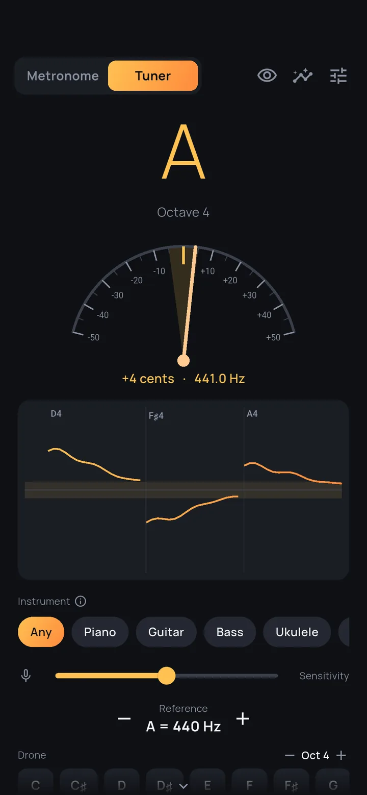
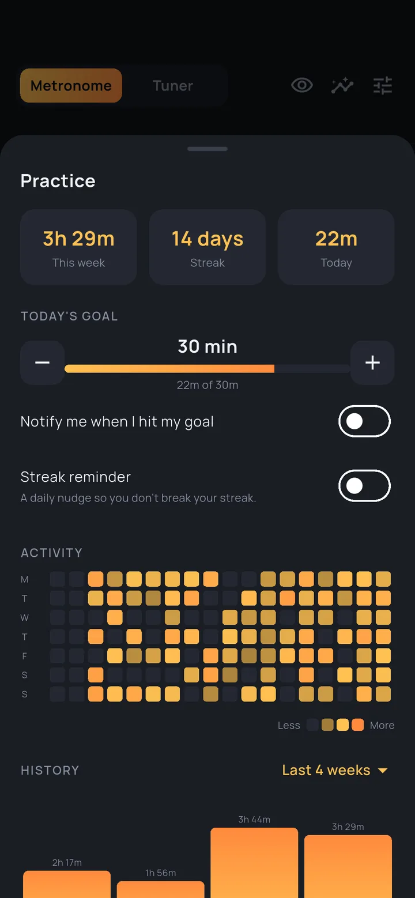
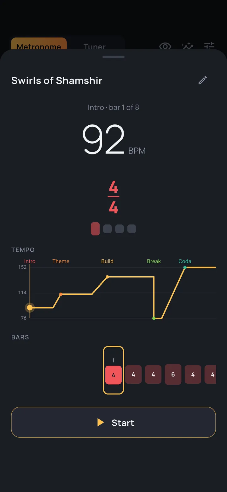
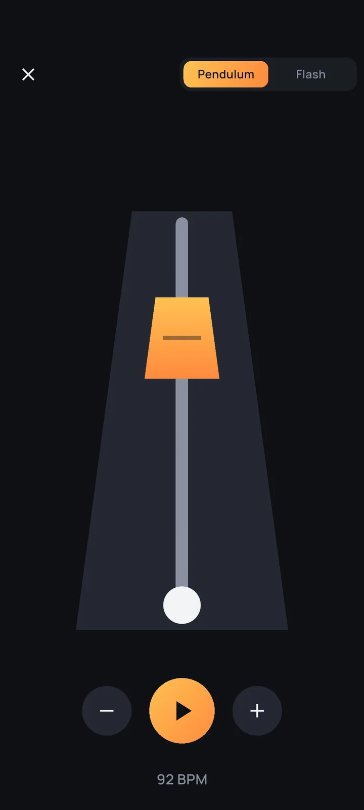

What it does
Built for the practice session, not the demo
Five things a metronome has to get right before it earns a place on the stand.
Odd meters
Any time signature, with the accents where you put them.
Polyrhythms
A second pulse against the first, with its own indicator.
Subdivisions
Eighths, triplets, sixteenths — audible, not implied.
Sequences
Tempo and meter changes mid-piece, played as one run.
Practice log
What you played and for how long, kept without asking.
The app
The rest of the session
A chromatic tuner behind the same switch as the metronome, and the three screens a practice session actually spends its time on.




It keeps playing when you put the phone down
A metronome that stops the moment the screen locks is useless, so Steady runs its click as a foreground media service: it keeps sounding while you are looking at your score, with tempo and transport on the notification and the lock screen. That is the only thing it does in the background, and it stops when you stop it.